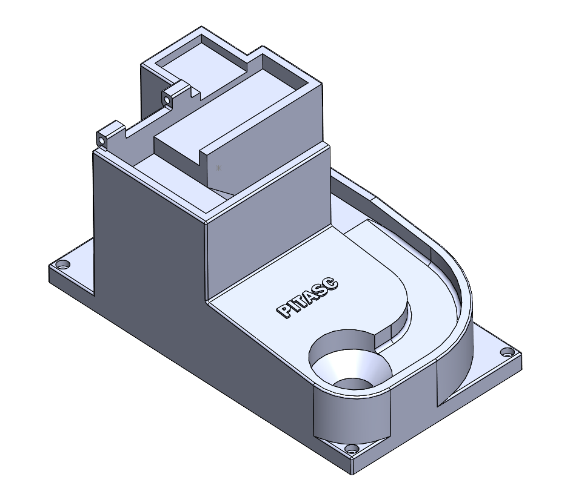
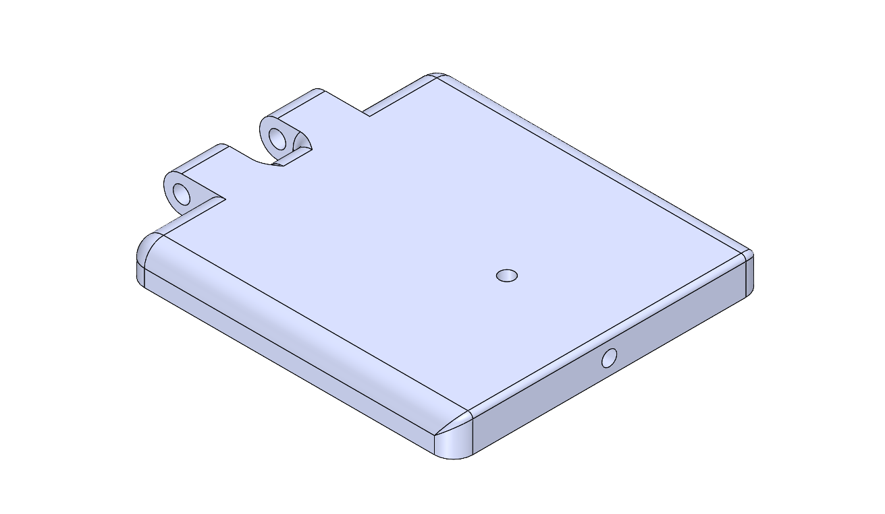
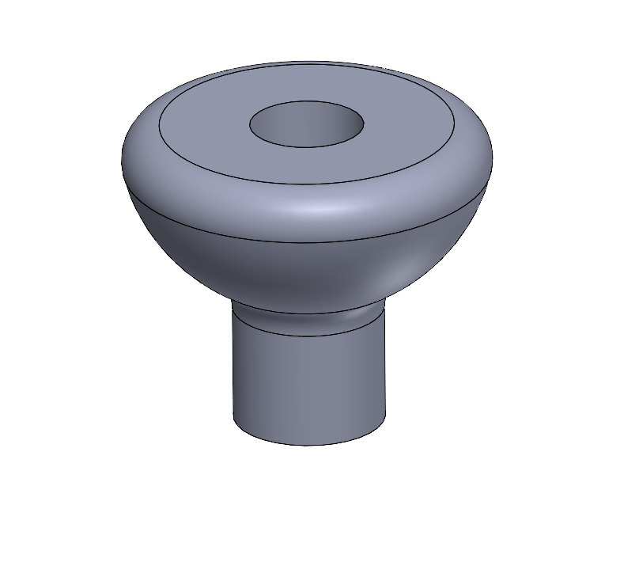
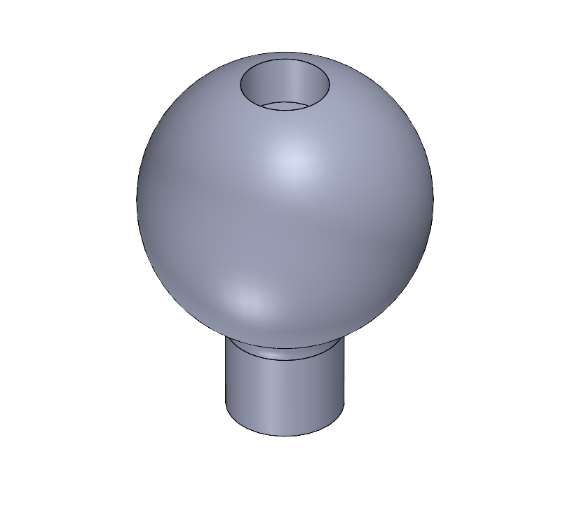
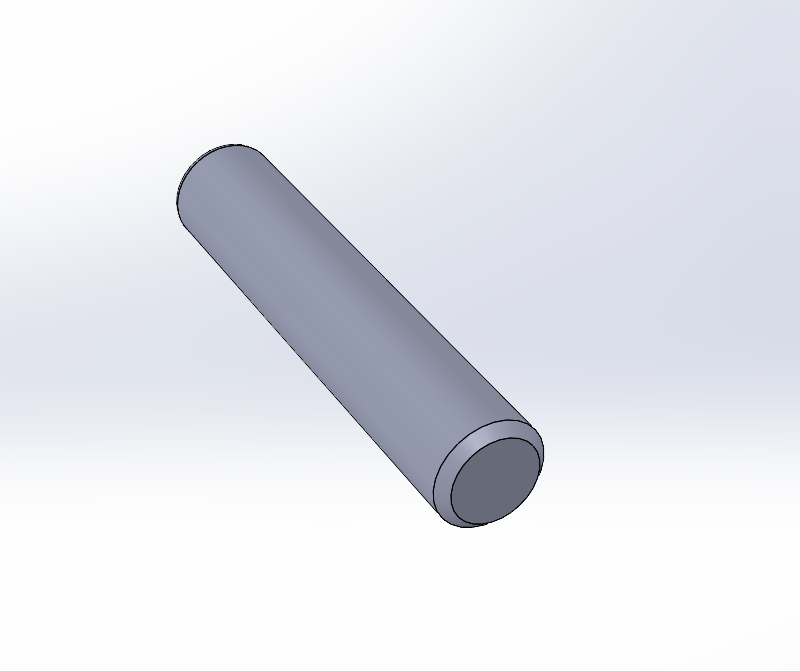
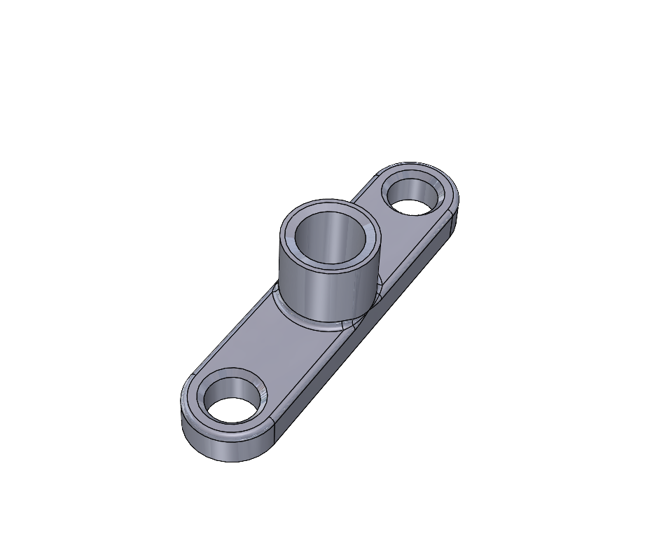
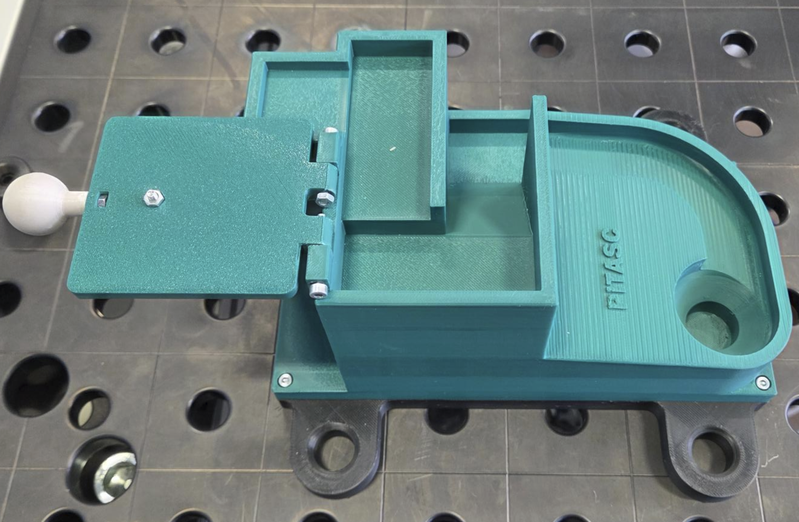
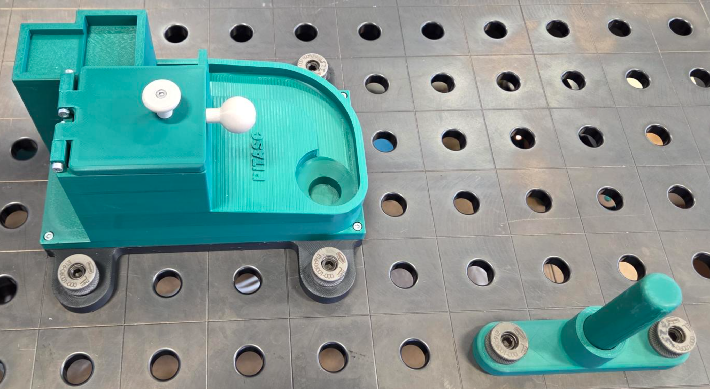

Complex Maze with Hatch - Cartesian Space
What you will learn
How to combine several of pitasc’s most common skills - linear movements, a guarded approach and different variants of the slide skill. The application focus is twofold: door opening, which uses force feedback to find the rotation axis of the hatch, and force-guided maze solving, in which the peg is guided purely by contact forces.
Requirements
Hardware
Item |
Details |
|---|---|
3D printer |
For the parts listed in Provided 3D models |
Fasteners |
Screws ISO 4762 – M3x35 and nuts ISO 4032 – M3 (or comparable), 7 pcs each |
Robot |
Any pitasc-compatible robot with a force/torque sensor. This example uses a UR5e with a Weiss WSG 50-110. |
Table (recommended) |
Welding table with 50 × 50 hole pattern, hole diameter 16 mm |
Positioning bolts |
16 mm, 4 – 6 pcs |
Supported grippers
Used in this example. Requires either:
F-WSG-FMFsensor fingers, or2 × custom fingers (model 08 below)
Supported out of the box.
Supported out of the box.
Supported out of the box.
Provided 3D models
All models are hosted on GrabCAD and available as .step, .stl and
.sldprt.
Station, hatch and handles
# |
Preview |
Part |
Downloads |
|---|---|---|---|
01 |

|
Lower section Note Print with the chamfer facing up. |
|
02 |
 |
Upper section with maze Contains the rectangular path, the slope and the final curve. Note Print with the largest surface facing down. |
|
03 |
 |
Door / hatch Blocks the maze entrance until it is opened. Note Print with the largest surface facing down. |
|
04 |
 |
Flat handle (option A) Note Print with the largest surface facing down. |
|
05 |
 |
Spherical handle (option B) Note Print with the largest surface facing down. |


Peg, holder and gripper fingers
# |
Preview |
Part |
Downloads |
|---|---|---|---|
06 |
 |
Cylindrical peg The workpiece that is guided through the maze. |
|
07 |
 |
Peg holder Defines the pick and place pose of the peg. |
|
08 |

|
Custom gripper fingers For the Weiss WSG 50-110 only. Note Print with the largest surface facing down. |


Setup
Step 1 - Print the parts
Print the lower and upper section, the cylindrical peg carrier and the cylindrical peg. Also as per your gripper, print the custom gripper fingers to hold the cylindrical peg.
Warning
Tolerances were tested on a Bambu Lab X1 - adjust if needed..
Step 2 - Assemble the station
Assemble the lower and upper section using the screws and nuts.

Assembly of the 3D-printed parts with bottom stand and top layer with complex maze.
Step 3 - Attach the handle
Attach the desired handle (flat or spherical) to the side of the hatch using an M3x25 screw and an M3 nut.

Handle mounted to the side of the hatch.
Step 4 - Mount the hatch
Attach the hatch to the base maze part using two M3x25 screws and two M3 nuts.
Warning
Tighten the nuts only slightly, so that the hatch can still rotate freely. An over-tightened hatch distorts the force feedback used to estimate the hinge axis.


Hatch mounted to the upper maze section.
Step 5 - Clamp everything to the table
Place the maze and the peg holder on your welding table and fix them with the positioning bolts.


Example configuration, allowing easy access to both the peg holder and the maze entrance.
Step 6 - Mount the gripper fingers
If needed, screw the custom 3D-printed gripper fingers onto the Weiss WSG 50-110 gripper.
How to solve this parkour task
The task consists of several sub-tasks:
Open the hatch while continuously gripping the installed handle.
Pick up the cylindrical peg.
Push the peg down at the start of the maze.
Guide the peg along the upper path, keeping contact with the maze surface at all times.
Glide down the slope until the downward curve is reached.
Follow the curve and guide the peg into the target opening.
Place the peg back in the peg holder.

Intended path of the peg from start to target opening.
Why the hatch matters
The hinge position and axis of rotation are not taught in advance. They are estimated online from force feedback while the gripper holds the handle, which makes the skill robust against small placement errors of the station.
Try it yourself
Add your solution to:
.../pitasc_realworld_tutorial_p2/apps/parkour_2.xml
Then start RViz and the frame editor with:
roslaunch pitasc_realworld_tutorial_p2 bringup_ur5_parkour_2.launch
Increasing levels of assistance
The following sections progressively reveal more detail. Stop reading at whichever level still leaves you with an interesting challenge.
Level 1 – Rough steps - the four high-level actions
Level 2 – Example steps in detail - every individual motion, no code
Level 3 – Tips on using skills - which pitasc skills to reach for
Level 4 – Step-by-step sample solution - the full annotated XML
Level 1 – Rough steps
The sample solution comprises the following rough steps. Each step is implemented as a skill sequence containing several skills:
Pick up the peg from the peg holder.
Place the peg back in the peg holder.
Open the hatch that blocks the maze.
Solve the maze by guiding the peg along the path while keeping it in contact with the maze surface.
Level 2 – Example steps in detail
Note
For safety reasons, each step begins and ends with the robot moving to its home pose by linear movement.
Step 1 - Pick up the peg
Move to home pose (position controlled)
Move to a position above the peg holder (position controlled)
Lower the end effector to the gripping position (position controlled)
Grip the cylindrical peg (command to your specific gripper)
Push down on the peg to ensure a safe grip (force controlled - only needed for flat gripper fingers)
Move upwards (position controlled)
Move to home pose (position controlled)
Step 2 - Place down the peg
Move to home pose (position controlled)
Move to a position above the peg holder (position controlled)
Move close to the cylindrical opening (position controlled)
Establish contact between peg and opening (force controlled)
Push down to ensure the peg is seated inside the opening (force controlled)
Release the grip (command to your specific gripper)
Move upwards (position controlled)
Move to home pose (position controlled)
Step 3 - Open the hatch
Move to home pose (position controlled)
Ensure the gripper is open (command to your specific gripper)
Move the gripper to a horizontal pose above the handle (position controlled)
Move the gripper to the grasp pose for the handle (position controlled)
Grip the handle (command to your specific gripper)
Rotate around the hatch hinge axis while still gripping the handle (force and position controlled)
Release the handle (command to your specific gripper)
Move to home pose (position controlled)
Step 4 - Solve the maze
Move to home pose (position controlled)
Move the peg above the maze start position (position controlled)
Establish contact between peg and maze (force controlled)
Slide while pushing down until a high force signals that a wall has been hit; change direction and slide again. Repeat until a certain depth is reached (velocity, position and force controlled)
On entering the slope, press down to determine the surface normal (force controlled)
Orient the peg along the direction of the normal force while pressing down (position and force controlled)
Slide down the slope while pushing down, until a high force signals the end of the slope (velocity, position and force controlled)
Rotate the peg upright, then push against the outside/inside of the curve while moving along the curve (velocity, position and force controlled)
Push the peg into the final target opening (force controlled)
Move upwards (position controlled)
Move to home pose (position controlled)
Tip
The slope is the critical section: re-estimating the surface normal before sliding gives you a well-defined contact state, so the sliding direction and the pressing direction stay decoupled.
Level 3 – Tips on using skills
Goal |
Recommended approach |
|---|---|
Press down and move at the same time |
Combine both motions in a skill concurrency. |
Establish contact with the surroundings |
Use a guarded approach. |
Predictable linear motion with minimal jerk |
Use |
Follow a wall, slope or curve under constant force |
Use the pitasc slide skill. |
End a skill on a condition |
Attach monitors to react to a force threshold or travelled distance. |
Align the tool with an unknown surface |
Press down, read the measured force direction and orient the peg along the resulting normal. |
Danger
Tare the force/torque sensor before every force-controlled skill. This is the single most important step for reliable real-world operation - an untared sensor makes the measured contact force meaningless and can damage the peg, the hatch or the station.
Tip
Add user confirms between skills. This makes it much easier to spot problems and abort execution safely while developing.
Level 4 – Step-by-step sample solution
Preamble
The preamble handles all imports of relevant models and configures the application environment, in which every component (robots, sensors, actuators) must be specified in order to be controlled later on. It also defines a boolean parameter to activate or deactivate all user confirmations at once.
0_preamble.xml
<?xml version="1.0" encoding="UTF-8"?>
<pitasc>
<models>
<!-- Include relevant models -->
<include package="pitasc_library" file="models/pitasc.xml"/>
<include package="pitasc_library" file="models/skills.xml"/>
<include package="pitasc_library" file="utils/gravity_compensator.xml"/>
<include package="pitasc_library" file="universal_robots/ur.xml"/>
<include package="pitasc_library" file="weiss_robotics/kms40.xml"/>
<include package="pitasc_weiss_wsg" file="models/wsg50.xml"/>
<include package="pitasc_library" file="frame_editor/frame_editor.xml" />
</models>
<!-- Create an application -->
<clone prototype="project">
<!-- Parameter to ignore all user confirms. If set to True, all user
confirms are skipped. If set to False, all user confirms are active -->
<type id="ignore_uc" prototype="bool_parameter">
<meta>
<member id="description">Parameter to ignore user confirms (uc) and fire the (success) event immediately</member>
<member id="visibility">basic</member>
</meta>
<data>False</data>
</type>
<!-- Configure pitasc (set update rate, relevant for controllers)-->
<member id="configuration">
<clone id="configuration" prototype="default_configuration">
<member id="update_rate">250</member>
</clone>
</member>
<!-- Set up environment -->
<member id="environment">
<!-- Specify and configure robot -->
<clone id="ur5" prototype="robot_ur5">
<member id="robot_driver.max_velocity">0.4</member>
<member id="robot_driver.max_acceleration">1.0</member>
<member id="robot_driver.topic_in">ur5/joint_states</member>
<member id="robot_driver.topic_out">ur5/joint_vel</member>
<member id="robot_driver.urdf_key">ur5/robot_description</member>
<member id="urdf_prefix">ur5_</member>
<member id="components">
<!-- Specify used force/torque sensor (in this example the robots internal f/t-sensor) -->
<clone id="force_sensor" prototype="weiss_kms40">
<member id="wrench_topic">/wrench_compensated</member>
<member id="namespace">/ur5</member>
</clone>
<!-- Specify used gripper -->
<clone id="gripper" prototype="weiss_wsg50">
<member id="namespace">/ur5/wsg50</member>
</clone>
</member>
</clone>
</member>
<member id="applications">
<!-- ######################################### -->
<!-- -->
<!-- Skill sequences need to be specified here -->
<!-- -->
<!-- ######################################### -->
</member>
</clone>
</pitasc>
Homing sequence for gripper and robot
This short skill sequence commands the WSG 50-110 gripper to run its homing sequence. Afterwards the robot moves to its initial home pose.
0.1_home_robot.xml
<!-- Skill sequence for homing the gripper -->
<clone id="Home robot" prototype="skill_sequence">
<!-- Specify which robot will be controlled -->
<member id="robot" reference_id="environment.ur5"/>
<!-- The skills that will be carried out by the specified robot -->
<member id="skills">
<!-- Wait, until transformations are available -->
<clone prototype="skill_wait_for_transform">
<member id="frame">ur5_weiss_wsg50_grip_center</member>
<member id="parent_frame">world</member>
</clone>
<!-- Move robot end effector to home pose-->
<clone prototype="skill_lin_time_optimal_ruckig">
<member id="tool_frame">ur5_weiss_wsg50_grip_center</member>
<member id="target_frame">home_pos</member>
</clone>
</member>
</clone>
Step 1: Pick up the peg
Picks up the peg from the cylindrical peg holder and carries it to the robot’s home pose.
1_pick_up_peg.xml
<!-- Skill sequence for picking up the the cylinder in the workpiece holder -->
<clone id="Pick up peg from workpiece holder" prototype="skill_sequence">
<!-- Specify which robot will be controlled -->
<member id="robot" reference_id="environment.ur5"/>
<!-- The skills that will be carried out by the specified robot -->
<member id="skills">
<!-- Wait, until transformations are available -->
<clone prototype="skill_wait_for_transform">
<member id="frame">ur5_weiss_wsg50_grip_center</member>
<member id="parent_frame">world</member>
</clone>
<clone prototype="skill_user_confirm">
<member id="title">Confirmation required</member>
<member id="text">Open gripper and move robot to home pos?</member>
<member id="ignore" reference_id="ignore_uc" />
</clone>
<clone prototype="weiss_wsg50_homing" />
<!-- Move gripper fingers to defined position -->
<clone id="preposition gripper" prototype="weiss_wsg50_position">
<member id="position">60.0</member>
<member id="speed">50.0</member>
</clone>
<!-- Move gripper fingers to defined position -->
<clone id="preposition gripper" prototype="weiss_wsg50_position">
<member id="position">60.0</member>
<member id="speed">50.0</member>
</clone>
<!-- Move end effector to home position -->
<clone prototype="skill_lin_time_optimal">
<member id="tool_frame">ur5_weiss_wsg50_grip_center</member>
<member id="target_frame">home_pos</member>
</clone>
<clone prototype="skill_user_confirm">
<member id="title">Confirmation required</member>
<member id="text">Move robot to Peg pick up position?</member>
<member id="ignore" reference_id="ignore_uc" />
</clone>
<!-- Move end effector to a position in a safe distance above workiece holder -->
<clone prototype="skill_lin_time_optimal">
<member id="tool_frame">ur5_weiss_wsg50_grip_center</member>
<member id="target_frame">1_appr_Peg_pick_up</member>
</clone>
<clone prototype="skill_user_confirm">
<member id="title">Confirmation required</member>
<member id="text">Move robot to grasp position?</member>
<member id="ignore" reference_id="ignore_uc" />
</clone>
<!-- Lower the end effector to the grasp position -->
<clone prototype="skill_lin_time_optimal">
<member id="tool_frame">ur5_weiss_wsg50_grip_center</member>
<member id="target_frame">2_Peg_pick_up</member>
</clone>
<clone prototype="skill_user_confirm">
<member id="title">Confirmation required</member>
<member id="text">Grip Peg?</member>
<member id="ignore" reference_id="ignore_uc" />
</clone>
<!-- Tare force/torque sensor output -->
<clone prototype="skill_tare_gravity_compensator">
<member id="duration">0.1</member>
<member id="namespace">ur5</member>
</clone>
<clone prototype="weiss_wsg50_set_force">
<member id="force">80.0</member>
</clone>
<!-- Perform gripping with set speed -->
<clone prototype="weiss_wsg50_grip">
<member id="position">20.0</member>
<member id="speed">50.0</member>
</clone>
<clone prototype="skill_user_confirm">
<member id="title">Confirmation required</member>
<member id="text">Push down on Peg?</member>
<member id="ignore" reference_id="ignore_uc" />
</clone>
<!-- Push down onto peg to deepen grip -->
<clone id="ensure full grip on TODO" prototype="skill_push_duration">
<member id="tool_frame">ur5_weiss_wsg50_grip_center</member>
<member id="force_frame">ur5_weiss_wsg50_grip_center</member>
<member id="duration">1.0</member>
<member id="target_forces">0.0, 0.0, 25.0</member>
<member id="axes">x, y, z</member>
</clone>
<clone prototype="skill_user_confirm">
<member id="title">Confirmation required</member>
<member id="text">Lift Peg?</member>
<member id="ignore" reference_id="ignore_uc" />
</clone>
<!-- Move the end effector to a position with a relative
offset in vertical direction -->
<clone prototype="skill_relative_lin">
<member id="tool_frame">ur5_weiss_wsg50_grip_center</member>
<member id="axes">x, y, z, a, b, c</member>
<member id="target_offsets">0,0,-0.05,0,0,0</member>
</clone>
<clone prototype="skill_user_confirm">
<member id="title">Confirmation required</member>
<member id="text">Move robot to home pos?</member>
<member id="ignore" reference_id="ignore_uc" />
</clone>
<!-- Return to home pose while holding the TODO -->
<clone prototype="skill_lin_time_optimal_ruckig">
<member id="tool_frame">ur5_weiss_wsg50_grip_center</member>
<member id="target_frame">home_pos</member>
</clone>
</member>
</clone>
Step 2: Place down the peg
Places the peg back in the peg holder. The robot first moves to a position just above the holder, then gently establishes contact and pushes the peg into the opening.
2_place_down_peg.xml
<!-- Skill sequence for placing down the cylinder in the workpiece holder -->
<clone id="Place peg in workpiece holder" prototype="skill_sequence">
<!-- Specify which robot will be controlled -->
<member id="robot" reference_id="environment.ur5"/>
<!-- The skills that will be carried out by the specified robot -->
<member id="skills">
<!-- Wait, until transformations are available -->
<clone prototype="skill_wait_for_transform">
<member id="frame">ur5_weiss_wsg50_grip_center</member>
<member id="parent_frame">world</member>
</clone>
<clone prototype="skill_user_confirm">
<member id="title">Confirmation required</member>
<member id="text">Open gripper and move robot to home pos?</member>
<member id="ignore" reference_id="ignore_uc" />
</clone>
<!-- Move end effector to home position -->
<clone prototype="skill_lin_time_optimal_ruckig">
<member id="tool_frame">ur5_weiss_wsg50_grip_center</member>
<member id="target_frame">home_pos</member>
</clone>
<clone prototype="skill_user_confirm">
<member id="title">Confirmation required</member>
<member id="text">Move robot to Peg pick up position?</member>
<member id="ignore" reference_id="ignore_uc" />
</clone>
<!-- Move end effector to a position in a safe distance above workiece holder -->
<clone prototype="skill_lin_time_optimal">
<member id="tool_frame">ur5_weiss_wsg50_grip_center</member>
<member id="target_frame">1_appr_Peg_pick_up</member>
</clone>
<clone prototype="skill_user_confirm">
<member id="title">Confirmation required</member>
<member id="text">Establish contact?</member>
<member id="ignore" reference_id="ignore_uc" />
</clone>
<!-- Lower the end effector to the grasp position -->
<!-- <clone prototype="skill_lin_time_optimal_ruckig">
<member id="tool_frame">ur5_weiss_wsg50_grip_center</member>
<member id="target_frame">2_Peg_pick_up</member>
</clone> -->
<!-- Tare force/torque sensor output -->
<clone prototype="skill_tare_gravity_compensator">
<member id="duration">0.1</member>
<member id="namespace">ur5</member>
</clone>
<clone prototype="skill_guarded_approach">
<member id="max_forces">10.0</member>
<member id="tool_frame">ur5_weiss_wsg50_grip_center</member>
<member id="control_frame">table</member>
<member id="axes">z</member>
<member id="velocities">-0.01</member>
</clone>
<clone prototype="skill_user_confirm">
<member id="title">Confirmation required</member>
<member id="text">Push peg into hole?</member>
<member id="ignore" reference_id="ignore_uc" />
</clone>
<clone prototype="skill_push_duration">
<member id="tool_frame">ur5_weiss_wsg50_grip_center</member>
<member id="force_frame">table</member>
<member id="axes">z</member>
<member id="target_forces">-15</member>
<member id="duration">1.0</member>
</clone>
<clone prototype="skill_user_confirm">
<member id="title">Confirmation required</member>
<member id="text">Release peg?</member>
<member id="ignore" reference_id="ignore_uc" />
</clone>
<!-- Release peg -->
<clone prototype="weiss_wsg50_release"/>
<clone prototype="skill_user_confirm">
<member id="title">Confirmation required</member>
<member id="text">Go up?</member>
<member id="ignore" reference_id="ignore_uc" />
</clone>
<!-- Move the end effector to a position with a relative
offset in vertical direction -->
<clone prototype="skill_relative_lin">
<member id="tool_frame">ur5_weiss_wsg50_grip_center</member>
<member id="axes">x, y, z, a, b, c</member>
<member id="target_offsets">0,0,-0.05,0,0,0</member>
</clone>
<clone prototype="skill_user_confirm">
<member id="title">Confirmation required</member>
<member id="text">Move robot to home pos?</member>
<member id="ignore" reference_id="ignore_uc" />
</clone>
<!-- Return to home pose while holding the TODO -->
<clone prototype="skill_lin_time_optimal_ruckig">
<member id="tool_frame">ur5_weiss_wsg50_grip_center</member>
<member id="target_frame">home_pos</member>
</clone>
</member>
</clone>
Step 3: Open the hatch
To solve the maze, the hatch has to be opened first. The following skill grips the horizontally oriented handle and rotates until the hatch can be released and falls into its open position.
3_open_hatch.xml
<clone id="Open hatch with horizontal handle" prototype="skill_sequence">
<member id="robot" reference_id="environment.ur5"/>
<member id="skills">
<!-- Wait, until transformations are available -->
<clone prototype="skill_wait_for_transform">
<member id="frame">ur5_weiss_wsg50_grip_center</member>
<member id="parent_frame">world</member>
</clone>
<clone prototype="weiss_wsg50_set_force">
<member id="force">80.0</member>
</clone>
<clone prototype="weiss_wsg50_homing" />
<clone prototype="skill_user_confirm">
<member id="title">Confirmation required</member>
<member id="text">Move robot to home pos?</member>
<member id="ignore" reference_id="ignore_uc" />
</clone>
<!-- Move end effector to home position -->
<clone prototype="skill_lin_time_optimal_ruckig">
<member id="tool_frame">ur5_weiss_wsg50_grip_center</member>
<member id="target_frame">home_pos</member>
</clone>
<clone prototype="skill_user_confirm">
<member id="title">Confirmation required</member>
<member id="text">Move robot to hatch approach pos?</member>
<member id="ignore" reference_id="ignore_uc" />
</clone>
<clone prototype="skill_lin_time_optimal_ruckig">
<member id="tool_frame">ur5_weiss_wsg50_grip_center</member>
<member id="target_frame">4_door_grip</member>
<member id="target_offsets">-0.06, 0.0, -0.06, 0.0, 0.0, 0.0 </member>
<member id="positioning_accuracy">0.0005,0.0005,0.0005,0.0005,0.0005,0.0005</member>
</clone>
<clone prototype="skill_lin_time_optimal_ruckig">
<member id="tool_frame">ur5_weiss_wsg50_grip_center</member>
<member id="target_frame">4_door_grip</member>
<member id="target_offsets">0.0, 0.0, -0.06, 0.0, 0.0, 0.0 </member>
<member id="positioning_accuracy">0.0005,0.0005,0.0005,0.0005,0.0005,0.0005</member>
</clone>
<clone prototype="skill_lin_time_optimal_ruckig">
<member id="tool_frame">ur5_weiss_wsg50_grip_center</member>
<member id="target_frame">4_door_grip</member>
<member id="positioning_accuracy">0.0005,0.0005,0.0005,0.0005,0.0005,0.0005</member>
</clone>
<clone prototype="skill_user_confirm">
<member id="title">Confirmation required</member>
<member id="text">Grip hatch handle?</member>
<member id="ignore" reference_id="ignore_uc" />
</clone>
<clone prototype="skill_tare_gravity_compensator">
<member id="duration">0.1</member>
<member id="namespace">ur5</member>
</clone>
<clone prototype="weiss_wsg50_set_force">
<member id="force">80.0</member>
</clone>
<!-- Perform gripping with set speed -->
<clone prototype="weiss_wsg50_grip">
<member id="position">10.0</member>
<member id="speed">50.0</member>
</clone>
<clone prototype="skill_user_confirm">
<member id="title">Confirmation required</member>
<member id="text">Open hatch?</member>
<member id="ignore" reference_id="ignore_uc" />
</clone>
<clone prototype="skill_door_opening">
<member id="tool_frame">ur5_weiss_wsg50_grip_center</member>
<member id="parent_frame" reference_id="robot.base_link"/>
<member id="source_frame">estimate_hinge_position</member>
<member id="force_axes">y</member>
<member id="distance_calc">0.26</member>
<member id="distance">1.57</member>
<member id="velocities">0, 0.13, 0, 0, 0, 0</member>
<member id="monitor_dead_zone">0.02</member>
</clone>
<clone prototype="weiss_wsg50_release"/>
<clone prototype="skill_lin_time_optimal_ruckig">
<member id="tool_frame">ur5_weiss_wsg50_grip_center</member>
<member id="target_frame">home_pos</member>
</clone>
</member>
</clone>
Step 4: Solve the maze
Solving the maze involves multiple challenges: navigating the upper rectangular path, sliding down the steep slope, following the downward curve and finally pushing the peg into the target hole.
4_solve_maze.xml
<clone id="Solve maze" prototype="skill_sequence">
<!-- Specify which robot will be controlled -->
<member id="robot" reference_id="environment.ur5"/>
<!-- The skills that will be carried out by the specified robot -->
<member id="skills">
<clone prototype="skill_wait_for_transform">
<member id="frame">ur5_weiss_wsg50_grip_center</member>
<member id="parent_frame">world</member>
</clone>
<clone prototype="skill_lin_time_optimal_ruckig">
<member id="tool_frame">ur5_weiss_wsg50_grip_center</member>
<member id="target_frame">home_pos</member>
</clone>
<clone prototype="skill_lin_time_optimal_ruckig">
<member id="tool_frame">ur5_weiss_wsg50_grip_center</member>
<member id="target_frame">5_maze_start_position</member>
</clone>
<clone prototype="skill_user_confirm">
<member id="title">Confirmation required</member>
<member id="text">Before guarded approach</member>
<member id="ignore" reference_id="ignore_uc" />
</clone>
<clone prototype="skill_tare_gravity_compensator">
<member id="duration">0.1</member>
<member id="namespace">ur5</member>
</clone>
<clone id="UPPER_MAZE_establish_contact" prototype="skill_guarded_approach">
<member id="max_forces">10.0</member>
<member id="tool_frame">ur5_weiss_wsg50_grip_center</member>
<member id="control_frame">ur5_weiss_wsg50_grip_center</member>
<member id="axes">z</member>
<member id="velocities">0.005</member>
</clone>
<clone id="UPPER_MAZE_press_on_start" prototype="skill_push_duration">
<member id="tool_frame">ur5_weiss_wsg50_grip_center</member>
<member id="force_frame">ur5_weiss_wsg50_grip_center</member>
<member id="duration">1.0</member>
<member id="target_forces">0.0, 0.0, 5.0</member>
<member id="axes">x, y, z</member>
</clone>
<clone id="UPPER_MAZE_align_level_1_contact_frame" prototype="frame_editor_align">
<member id="frame">level_1_contact</member>
<member id="source">ur5_weiss_wsg50_grip_center</member>
<member id="axes">x,y,z,a,b,c</member>
</clone>
<clone id="UPPER_MAZE_uc_frame_aligned" prototype="skill_user_confirm">
<member id="title">Confirmation required</member>
<member id="text">Is the frame aligned?</member>
<member id="ignore" reference_id="ignore_uc" />
</clone>
<clone id="UPPER_MAZE_solve_maze_skill" prototype="skill_solve_linear_puzzle_CCW">
<member id="tool_frame">ur5_weiss_wsg50_grip_center</member>
<member id="control_frame">table</member>
<member id="monitors">
<clone prototype="monitor_distance">
<member id="event">succeeded</member>
<member id="reference_frame">level_1_contact</member>
<member id="frame">ur5_weiss_wsg50_grip_center</member>
<member id="coordinates">z</member>
<member id="distances">0.022</member>
<member id="operator">absolute_greater_equal</member>
</clone>
</member>
</clone>
<clone id="SLIDE_push_and_temp_frame_from_force" prototype="skill_push_duration">
<member id="force_frame">pen_contact_frame</member>
<member id="tool_frame">pen_contact_frame</member>
<member id="axes">x, y, z</member>
<member id="target_forces">0.0, 5.0, 5.0</member>
<member id="duration">1.0</member>
<member id="scripts">
<clone prototype="script_temp_frame_from_force">
<member id="frame">slide_normal_frame</member>
<member id="source">pen_contact_frame</member>
<member id="parent" reference_id="robot.base_link"/>
<member id="low_pass_filter_gain">0.01</member>
<member id="tf_broadcast">true</member>
</clone>
</member>
</clone>
<clone prototype="skill_user_confirm">
<member id="title">Confirmation required</member>
<member id="text">Success 1st time?</member>
<member id="ignore" reference_id="ignore_uc" />
</clone>
<clone id="SLIDE_align_with_slide_normal_frame" prototype="skill_concurrency">
<member id="skills">
<clone prototype="skill_cartesian_tracking">
<member id="tool_frame">pen_contact_frame</member>
<member id="target_frame">slide_normal_frame</member>
<member id="axes">a</member>
<member id="target_offsets">0.0</member>
<member id="max_linear_velocity">0.01</member>
<member id="max_angular_velocity">0.1</member>
</clone>
<clone prototype="skill_apply_force">
<member id="force_frame">pen_contact_frame</member>
<member id="axes">z</member>
<member id="target_forces">3.0</member>
<member id="compliance">0.002</member>
<member id="corner_frequency">5.0</member>
</clone>
<clone prototype="skill_hold_pose">
<member id="tool_frame">pen_contact_frame</member>
<member id="axes">x, y, b, c</member>
</clone>
</member>
<member id="monitors">
<clone prototype="monitor_relative_distance">
<member id="event">succeeded</member>
<member id="reference_frame">level_1_contact</member>
<member id="frame">pen_contact_frame</member>
<member id="coordinates">a</member>
<member id="distances">0.3</member>
<member id="target_offsets"></member>
<member id="operator">absolute_greater_equal</member>
</clone>
</member>
</clone>
<clone prototype="skill_user_confirm">
<member id="title">Confirmation required</member>
<member id="text">Oriented correctly first time?</member>
<member id="ignore" reference_id="ignore_uc" />
</clone>
<clone id="SLIDE_move_down_slide" prototype="skill_guarded_slide">
<member id="control_frame">pen_contact_frame</member>
<member id="tool_frame">pen_contact_frame</member>
<member id="max_forces">20.0</member>
<member id="operator">absolute_greater</member>
<member id="move_axes">y</member>
<member id="velocities">-0.01</member>
<member id="force_axes">z</member>
<member id="target_forces">5.0</member>
</clone>
<clone prototype="skill_user_confirm">
<member id="title">Confirmation required</member>
<member id="text">Success aligning for tool?</member>
<member id="ignore" reference_id="ignore_uc" />
</clone>
<clone id="SLIDE_orient_tool_vertically" prototype="skill_concurrency">
<member id="skills">
<clone prototype="skill_apply_force">
<member id="force_frame">pen_contact_frame</member>
<member id="axes">z</member>
<member id="target_forces">3.0</member>
<member id="compliance">0.002</member>
<member id="corner_frequency">5.0</member>
</clone>
<clone prototype="skill_cartesian_tracking">
<member id="tool_frame">pen_contact_frame</member>
<member id="target_frame">level_1_contact</member>
<member id="axes">a,b,c</member>
<member id="max_linear_velocity">0.01</member>
<member id="max_angular_velocity">0.1</member>
</clone>
<clone prototype="skill_hold_pose">
<member id="tool_frame">pen_contact_frame</member>
<member id="axes">x, y, z</member>
</clone>
</member>
<member id="monitors">
<clone prototype="monitor_distance">
<member id="event">succeeded</member>
<member id="reference_frame">level_1_contact</member>
<member id="frame">pen_contact_frame</member>
<member id="coordinates">a</member>
<member id="distances">0.001</member>
<member id="operator">absolute_less_equal</member>
</clone>
</member>
</clone>
<clone prototype="skill_user_confirm">
<member id="title">Confirmation required</member>
<member id="text">motion in a spiral now!</member>
<member id="ignore" reference_id="ignore_uc" />
</clone>
<clone prototype="skill_concurrency">
<member id="skills">
<clone prototype="skill_apply_force">
<member id="force_frame">ur5_weiss_wsg50_grip_center</member>
<member id="axes">x,y,z</member>
<member id="target_forces">0,0,0</member>
<member id="compliance">0.002</member>
<member id="corner_frequency">5.0</member>
</clone>
<clone prototype="skill_hold_pose">
<member id="tool_frame">ur5_weiss_wsg50_grip_center</member>
<member id="axes">a, b, c</member>
<member id="target_offsets">0,0,0</member>
</clone>
</member>
<member id="monitors">
<clone prototype="monitor_duration">
<member id="event">succeeded</member>
<member id="duration">1.5</member>
</clone>
</member>
</clone>
<clone id="push_start_motion_curve" prototype="skill_push_duration">
<member id="tool_frame">ur5_weiss_wsg50_grip_center</member>
<member id="force_frame">ur5_weiss_wsg50_grip_center</member>
<member id="axes">y, z</member>
<member id="target_forces">-6, 3.5</member>
<member id="compliance">0.002</member>
<member id="corner_frequency">5.0</member>
<member id="duration">1.5</member>
</clone>
<clone prototype="robot_motion_on_curve_path"/>
<clone id="some_skill" prototype="skill_push_duration">
<member id="tool_frame">ur5_weiss_wsg50_grip_center</member>
<member id="force_frame">ur5_weiss_wsg50_grip_center</member>
<member id="axes">y, z</member>
<member id="target_forces">1, 10</member>
<member id="corner_frequency">5.0</member>
<member id="duration">0.5</member>
</clone>
<clone prototype="skill_concurrency">
<member id="skills">
<clone prototype="skill_apply_force">
<member id="force_frame">ur5_weiss_wsg50_grip_center</member>
<member id="axes">x,y,z</member>
<member id="target_forces">0,0,5</member>
<member id="compliance">0.002</member>
<member id="corner_frequency">5.0</member>
</clone>
<clone prototype="skill_hold_pose">
<member id="tool_frame">ur5_weiss_wsg50_grip_center</member>
<member id="axes">a, b, c</member>
<member id="target_offsets">0,0,0</member>
</clone>
</member>
<member id="monitors">
<clone prototype="monitor_duration">
<member id="event">succeeded</member>
<member id="duration">1.0</member>
</clone>
</member>
</clone>
<clone prototype="skill_user_confirm">
<member id="title">Confirmation required</member>
<member id="text">Proceed with application?</member>
<member id="ignore" reference_id="ignore_uc" />
</clone>
<clone prototype="my_test_motion_on_sinkhole" />
<clone prototype="skill_push_duration">
<member id="tool_frame">pen_contact_frame</member>
<member id="force_frame">pen_contact_frame</member>
<member id="axes">x, y, z</member>
<member id="target_forces">0.0, 0.0, 10.0</member>
<member id="duration">1.5</member>
</clone>
<clone prototype="skill_idle_duration">
<member id="duration">1.0</member>
</clone>
<clone prototype="skill_user_confirm">
<member id="title">Confirmation required</member>
<member id="text">Proceed with application?</member>
<member id="ignore" reference_id="ignore_uc" />
</clone>
<clone prototype="skill_relative_lin">
<member id="tool_frame">ur5_weiss_wsg50_grip_center</member>
<member id="axes">x,y,z,a,b,c</member>
<member id="target_offsets">0.0, 0.0,-0.1,0.0,0.0,0.0</member>
</clone>
<clone prototype="skill_lin_time_optimal_ruckig">
<member id="tool_frame">ur5_weiss_wsg50_grip_center</member>
<member id="target_frame">home_pos</member>
</clone>
</member>
</clone>
Complete sample solution
For completeness, the full application is shown below. It includes all previously described steps, from homing the gripper to placing the cylindrical peg back in the peg holder.
5_complete_application.xml - full application
1<?xml version="1.0" encoding="UTF-8"?>
2
3<pitasc>
4 <models>
5 <!-- Include relevant models -->
6 <include package="pitasc_library" file="models/pitasc.xml"/>
7 <include package="pitasc_library" file="models/skills.xml"/>
8 <include package="pitasc_library" file="utils/gravity_compensator.xml"/>
9 <include package="pitasc_library" file="universal_robots/ur.xml"/>
10 <include package="pitasc_library" file="weiss_robotics/kms40.xml"/>
11 <include package="pitasc_weiss_wsg" file="models/wsg50.xml"/>
12 <include package="pitasc_library" file="frame_editor/frame_editor.xml" />
13 <include package="package_door_opening" file="skills/skill_door_opening.xml"/>
14 <include package="pitasc_realworld_tutorial" file="skills/skill_solve_hinge_puzzle.xml" />
15 <include package="pitasc_spiral_trajectory" file="skills/skill_limited_guarded_spiral.xml"/>
16
17 </models>
18
19 <!-- Create an application -->
20 <clone prototype="project">
21
22 <!-- Parameter to ignore all user confirms. If set to True, all user
23 confirms are skipped. If set to False, all user confirms are active -->
24 <type id="ignore_uc" prototype="bool_parameter">
25 <meta>
26 <member id="description">Parameter to ignore user confirms (uc) and fire the (success) event immediately</member>
27 <member id="visibility">basic</member>
28 </meta>
29 <data>True</data>
30 </type>
31
32 <!-- Configure pitasc (set update rate, relevant for controllers)-->
33 <member id="configuration">
34 <clone id="configuration" prototype="default_configuration">
35 <member id="update_rate">500</member>
36 <member id="pitasc.solver">
37 <clone id="solver" prototype="solver_prioritized" />
38 </member>
39 </clone>
40 </member>
41
42 <!-- Set up environment -->
43 <member id="environment">
44 <!-- Specify and configure robot -->
45 <clone id="ur5" prototype="robot_ur5">
46 <member id="robot_driver.max_velocity">0.4</member>
47 <member id="robot_driver.max_acceleration">1.0</member>
48 <member id="robot_driver.topic_in">ur5/joint_states</member>
49 <member id="robot_driver.topic_out">ur5/joint_vel</member>
50 <member id="robot_driver.urdf_key">ur5/robot_description</member>
51 <member id="urdf_prefix">ur5_</member>
52 <member id="components">
53 <!-- Specify used force/torque sensor (in this example the robots internal f/t-sensor) -->
54 <clone id="force_sensor" prototype="weiss_kms40">
55 <member id="wrench_topic">/wrench_compensated</member>
56 <member id="namespace">/ur5</member>
57 </clone>
58 <!-- Specify used gripper -->
59 <clone id="gripper" prototype="weiss_wsg50">
60 <member id="namespace">/ur5/wsg50</member>
61 </clone>
62 </member>
63 </clone>
64 </member>
65
66 <!-- "Applications" contains the usable skill sequences. Once this xml has
67 been loaded with piteacher, the skill sequences can be started by
68 pressing the corresponding button showing their id -->
69 <member id="applications">
70
71 <!-- Skill sequence for homing the gripper -->
72 <clone id="Home robot" prototype="skill_sequence">
73 <!-- Specify which robot will be controlled -->
74 <member id="robot" reference_id="environment.ur5"/>
75 <!-- The skills that will be carried out by the specified robot -->
76 <member id="skills">
77
78 <!-- Wait, until transformations are available -->
79 <clone prototype="skill_wait_for_transform">
80 <member id="frame">ur5_weiss_wsg50_grip_center</member>
81 <member id="parent_frame">world</member>
82 </clone>
83
84 <clone prototype="skill_lin_time_optimal_ruckig">
85 <member id="tool_frame">ur5_weiss_wsg50_grip_center</member>
86 <member id="target_frame">home_pos</member>
87 </clone>
88 </member>
89 </clone>
90 <!-- Skill sequence for homing the gripper -->
91 <clone id="Home gripper" prototype="skill_sequence">
92 <!-- Specify which robot will be controlled -->
93 <member id="robot" reference_id="environment.ur5"/>
94 <!-- The skills that will be carried out by the specified robot -->
95 <member id="skills">
96
97 <!-- Wait, until transformations are available -->
98 <clone prototype="skill_wait_for_transform">
99 <member id="frame">ur5_weiss_wsg50_grip_center</member>
100 <member id="parent_frame">world</member>
101 </clone>
102
103 <clone prototype="skill_user_confirm">
104 <member id="title">Confirmation required</member>
105 <member id="text">Home gripper?</member>
106 <member id="ignore" reference_id="ignore_uc" />
107 </clone>
108
109 <!-- Home the gripper.
110 Caution: the gripper will open completely -->
111 <clone prototype="weiss_wsg50_homing" />
112 </member>
113 </clone>
114
115 <!-- Skill sequence for picking up the the cylinder in the workpiece holder -->
116 <clone id="Pick up peg from workpiece holder" prototype="skill_sequence">
117 <!-- Specify which robot will be controlled -->
118 <member id="robot" reference_id="environment.ur5"/>
119 <!-- The skills that will be carried out by the specified robot -->
120 <member id="skills">
121
122 <!-- Wait, until transformations are available -->
123 <clone prototype="skill_wait_for_transform">
124 <member id="frame">ur5_weiss_wsg50_grip_center</member>
125 <member id="parent_frame">world</member>
126 </clone>
127
128 <clone prototype="skill_user_confirm">
129 <member id="title">Confirmation required</member>
130 <member id="text">Open gripper and move robot to home pos?</member>
131 <member id="ignore" reference_id="ignore_uc" />
132 </clone>
133
134 <clone prototype="weiss_wsg50_homing" />
135
136 <!-- Move gripper fingers to defined position -->
137 <clone id="preposition gripper" prototype="weiss_wsg50_position">
138 <member id="position">60.0</member>
139 <member id="speed">50.0</member>
140 </clone>
141
142
143 <!-- Move gripper fingers to defined position -->
144 <clone id="preposition gripper" prototype="weiss_wsg50_position">
145 <member id="position">60.0</member>
146 <member id="speed">50.0</member>
147 </clone>
148
149 <!-- Move end effector to home position -->
150 <clone prototype="skill_lin_time_optimal">
151 <member id="tool_frame">ur5_weiss_wsg50_grip_center</member>
152 <member id="target_frame">home_pos</member>
153 </clone>
154
155 <clone prototype="skill_user_confirm">
156 <member id="title">Confirmation required</member>
157 <member id="text">Move robot to Peg pick up position?</member>
158 <member id="ignore" reference_id="ignore_uc" />
159 </clone>
160
161 <!-- Move end effector to a position in a safe distance above workiece holder -->
162 <clone prototype="skill_lin_time_optimal">
163 <member id="tool_frame">ur5_weiss_wsg50_grip_center</member>
164 <member id="target_frame">1_appr_Peg_pick_up</member>
165 </clone>
166
167 <clone prototype="skill_user_confirm">
168 <member id="title">Confirmation required</member>
169 <member id="text">Move robot to grasp position?</member>
170 <member id="ignore" reference_id="ignore_uc" />
171 </clone>
172
173 <!-- Lower the end effector to the grasp position -->
174 <clone prototype="skill_lin_time_optimal">
175 <member id="tool_frame">ur5_weiss_wsg50_grip_center</member>
176 <member id="target_frame">2_Peg_pick_up</member>
177 </clone>
178
179 <clone prototype="skill_user_confirm">
180 <member id="title">Confirmation required</member>
181 <member id="text">Grip Peg?</member>
182 <member id="ignore" reference_id="ignore_uc" />
183 </clone>
184
185 <!-- Tare force/torque sensor output -->
186 <clone prototype="skill_tare_gravity_compensator">
187 <member id="duration">0.1</member>
188 <member id="namespace">ur5</member>
189 </clone>
190
191 <clone prototype="weiss_wsg50_set_force">
192 <member id="force">80.0</member>
193 </clone>
194
195 <!-- Perform gripping with set speed -->
196 <clone prototype="weiss_wsg50_grip">
197 <member id="position">20.0</member>
198 <member id="speed">50.0</member>
199 </clone>
200
201 <clone prototype="skill_user_confirm">
202 <member id="title">Confirmation required</member>
203 <member id="text">Push down on Peg?</member>
204 <member id="ignore" reference_id="ignore_uc" />
205 </clone>
206
207 <!-- Push down onto peg to deepen grip -->
208 <clone id="ensure full grip on TODO" prototype="skill_push_duration">
209 <member id="tool_frame">ur5_weiss_wsg50_grip_center</member>
210 <member id="force_frame">ur5_weiss_wsg50_grip_center</member>
211 <member id="duration">1.0</member>
212 <member id="target_forces">0.0, 0.0, 25.0</member>
213 <member id="axes">x, y, z</member>
214 </clone>
215
216 <clone prototype="skill_user_confirm">
217 <member id="title">Confirmation required</member>
218 <member id="text">Lift Peg?</member>
219 <member id="ignore" reference_id="ignore_uc" />
220 </clone>
221
222 <!-- Move the end effector to a position with a relative
223 offset in vertical direction -->
224 <clone prototype="skill_relative_lin">
225 <member id="tool_frame">ur5_weiss_wsg50_grip_center</member>
226 <member id="axes">x, y, z, a, b, c</member>
227 <member id="target_offsets">0,0,-0.05,0,0,0</member>
228 </clone>
229
230
231 <clone prototype="skill_user_confirm">
232 <member id="title">Confirmation required</member>
233 <member id="text">Move robot to home pos?</member>
234 <member id="ignore" reference_id="ignore_uc" />
235 </clone>
236
237 <!-- Return to home pose while holding the TODO -->
238 <clone prototype="skill_lin_time_optimal_ruckig">
239 <member id="tool_frame">ur5_weiss_wsg50_grip_center</member>
240 <member id="target_frame">home_pos</member>
241 </clone>
242 </member>
243 </clone>
244
245 <!-- Skill sequence for placing down the cylinder in the workpiece holder -->
246 <clone id="Place peg in workpiece holder" prototype="skill_sequence">
247 <!-- Specify which robot will be controlled -->
248 <member id="robot" reference_id="environment.ur5"/>
249 <!-- The skills that will be carried out by the specified robot -->
250 <member id="skills">
251 <!-- Wait, until transformations are available -->
252 <clone prototype="skill_wait_for_transform">
253 <member id="frame">ur5_weiss_wsg50_grip_center</member>
254 <member id="parent_frame">world</member>
255 </clone>
256
257 <clone prototype="skill_user_confirm">
258 <member id="title">Confirmation required</member>
259 <member id="text">Open gripper and move robot to home pos?</member>
260 <member id="ignore" reference_id="ignore_uc" />
261 </clone>
262
263 <!-- Move end effector to home position -->
264 <clone prototype="skill_lin_time_optimal_ruckig">
265 <member id="tool_frame">ur5_weiss_wsg50_grip_center</member>
266 <member id="target_frame">home_pos</member>
267 </clone>
268
269 <clone prototype="skill_user_confirm">
270 <member id="title">Confirmation required</member>
271 <member id="text">Move robot to Peg pick up position?</member>
272 <member id="ignore" reference_id="ignore_uc" />
273 </clone>
274
275 <!-- Move end effector to a position in a safe distance above workiece holder -->
276 <clone prototype="skill_lin_time_optimal">
277 <member id="tool_frame">ur5_weiss_wsg50_grip_center</member>
278 <member id="target_frame">1_appr_Peg_pick_up</member>
279 </clone>
280
281 <clone prototype="skill_user_confirm">
282 <member id="title">Confirmation required</member>
283 <member id="text">Establish contact?</member>
284 <member id="ignore" reference_id="ignore_uc" />
285 </clone>
286
287 <!-- Lower the end effector to the grasp position -->
288 <!-- <clone prototype="skill_lin_time_optimal_ruckig">
289 <member id="tool_frame">ur5_weiss_wsg50_grip_center</member>
290 <member id="target_frame">2_Peg_pick_up</member>
291 </clone> -->
292
293 <!-- Tare force/torque sensor output -->
294 <clone prototype="skill_tare_gravity_compensator">
295 <member id="duration">0.1</member>
296 <member id="namespace">ur5</member>
297 </clone>
298 <clone prototype="skill_guarded_approach">
299 <member id="max_forces">10.0</member>
300 <member id="tool_frame">ur5_weiss_wsg50_grip_center</member>
301 <member id="control_frame">table</member>
302 <member id="axes">z</member>
303 <member id="velocities">-0.01</member>
304 </clone>
305
306 <clone prototype="skill_user_confirm">
307 <member id="title">Confirmation required</member>
308 <member id="text">Push peg into hole?</member>
309 <member id="ignore" reference_id="ignore_uc" />
310 </clone>
311 <clone prototype="skill_push_duration">
312 <member id="tool_frame">ur5_weiss_wsg50_grip_center</member>
313 <member id="force_frame">table</member>
314 <member id="axes">z</member>
315 <member id="target_forces">-15</member>
316 <member id="duration">1.0</member>
317 </clone>
318
319 <clone prototype="skill_user_confirm">
320 <member id="title">Confirmation required</member>
321 <member id="text">Release peg?</member>
322 <member id="ignore" reference_id="ignore_uc" />
323 </clone>
324
325 <!-- Release peg -->
326 <clone prototype="weiss_wsg50_release"/>
327
328 <clone prototype="skill_user_confirm">
329 <member id="title">Confirmation required</member>
330 <member id="text">Go up?</member>
331 <member id="ignore" reference_id="ignore_uc" />
332 </clone>
333
334 <!-- Move the end effector to a position with a relative
335 offset in vertical direction -->
336 <clone prototype="skill_relative_lin">
337 <member id="tool_frame">ur5_weiss_wsg50_grip_center</member>
338 <member id="axes">x, y, z, a, b, c</member>
339 <member id="target_offsets">0,0,-0.05,0,0,0</member>
340 </clone>
341
342
343 <clone prototype="skill_user_confirm">
344 <member id="title">Confirmation required</member>
345 <member id="text">Move robot to home pos?</member>
346 <member id="ignore" reference_id="ignore_uc" />
347 </clone>
348
349 <!-- Return to home pose while holding the TODO -->
350 <clone prototype="skill_lin_time_optimal_ruckig">
351 <member id="tool_frame">ur5_weiss_wsg50_grip_center</member>
352 <member id="target_frame">home_pos</member>
353 </clone>
354 </member>
355 </clone>
356
357
358 <clone id="Open hatch with horizontal handle" prototype="skill_sequence">
359 <member id="robot" reference_id="environment.ur5"/>
360
361 <member id="skills">
362 <!-- Wait, until transformations are available -->
363 <clone prototype="skill_wait_for_transform">
364 <member id="frame">ur5_weiss_wsg50_grip_center</member>
365 <member id="parent_frame">world</member>
366 </clone>
367
368 <clone prototype="weiss_wsg50_set_force">
369 <member id="force">80.0</member>
370 </clone>
371
372 <clone prototype="weiss_wsg50_homing" />
373
374 <clone prototype="skill_user_confirm">
375 <member id="title">Confirmation required</member>
376 <member id="text">Move robot to home pos?</member>
377 <member id="ignore" reference_id="ignore_uc" />
378 </clone>
379
380 <!-- Move end effector to home position -->
381 <clone prototype="skill_lin_time_optimal_ruckig">
382 <member id="tool_frame">ur5_weiss_wsg50_grip_center</member>
383 <member id="target_frame">home_pos</member>
384 </clone>
385
386 <clone prototype="skill_user_confirm">
387 <member id="title">Confirmation required</member>
388 <member id="text">Move robot to hatch approach pos?</member>
389 <member id="ignore" reference_id="ignore_uc" />
390 </clone>
391
392 <clone prototype="skill_lin_time_optimal_ruckig">
393 <member id="tool_frame">ur5_weiss_wsg50_grip_center</member>
394 <member id="target_frame">4_door_grip</member>
395 <member id="target_offsets">-0.06, 0.0, -0.06, 0.0, 0.0, 0.0 </member>
396 <member id="positioning_accuracy">0.0005,0.0005,0.0005,0.0005,0.0005,0.0005</member>
397 </clone>
398
399 <clone prototype="skill_lin_time_optimal_ruckig">
400 <member id="tool_frame">ur5_weiss_wsg50_grip_center</member>
401 <member id="target_frame">4_door_grip</member>
402 <member id="target_offsets">0.0, 0.0, -0.06, 0.0, 0.0, 0.0 </member>
403 <member id="positioning_accuracy">0.0005,0.0005,0.0005,0.0005,0.0005,0.0005</member>
404 </clone>
405
406 <clone prototype="skill_lin_time_optimal_ruckig">
407 <member id="tool_frame">ur5_weiss_wsg50_grip_center</member>
408 <member id="target_frame">4_door_grip</member>
409 <member id="positioning_accuracy">0.0005,0.0005,0.0005,0.0005,0.0005,0.0005</member>
410 </clone>
411
412 <clone prototype="skill_user_confirm">
413 <member id="title">Confirmation required</member>
414 <member id="text">Grip hatch handle?</member>
415 <member id="ignore" reference_id="ignore_uc" />
416 </clone>
417
418 <clone prototype="skill_tare_gravity_compensator">
419 <member id="duration">0.1</member>
420 <member id="namespace">ur5</member>
421 </clone>
422
423 <clone prototype="weiss_wsg50_set_force">
424 <member id="force">80.0</member>
425 </clone>
426
427 <!-- Perform gripping with set speed -->
428 <clone prototype="weiss_wsg50_grip">
429 <member id="position">10.0</member>
430 <member id="speed">50.0</member>
431 </clone>
432
433 <clone prototype="skill_user_confirm">
434 <member id="title">Confirmation required</member>
435 <member id="text">Open hatch?</member>
436 <member id="ignore" reference_id="ignore_uc" />
437 </clone>
438
439 <clone prototype="skill_door_opening">
440 <member id="tool_frame">ur5_weiss_wsg50_grip_center</member>
441 <member id="parent_frame" reference_id="robot.base_link"/>
442 <member id="source_frame">estimate_hinge_position</member>
443 <member id="force_axes">y</member>
444
445 <member id="distance_calc">0.26</member>
446 <member id="distance">1.57</member>
447 <member id="velocities">0, 0.13, 0, 0, 0, 0</member>
448 <member id="monitor_dead_zone">0.02</member>
449 </clone>
450
451 <clone prototype="weiss_wsg50_release"/>
452
453 <clone prototype="skill_lin_time_optimal_ruckig">
454 <member id="tool_frame">ur5_weiss_wsg50_grip_center</member>
455 <member id="target_frame">home_pos</member>
456 </clone>
457
458 </member>
459 </clone>
460
461 <clone id="Solve maze" prototype="skill_sequence">
462 <!-- Specify which robot will be controlled -->
463 <member id="robot" reference_id="environment.ur5"/>
464 <!-- The skills that will be carried out by the specified robot -->
465 <member id="skills">
466 <clone prototype="skill_wait_for_transform">
467 <member id="frame">ur5_weiss_wsg50_grip_center</member>
468 <member id="parent_frame">world</member>
469 </clone>
470
471 <clone prototype="skill_lin_time_optimal_ruckig">
472 <member id="tool_frame">ur5_weiss_wsg50_grip_center</member>
473 <member id="target_frame">home_pos</member>
474 </clone>
475
476 <clone prototype="skill_lin_time_optimal_ruckig">
477 <member id="tool_frame">ur5_weiss_wsg50_grip_center</member>
478 <member id="target_frame">5_maze_start_position</member>
479 </clone>
480
481 <clone prototype="skill_user_confirm">
482 <member id="title">Confirmation required</member>
483 <member id="text">Before guarded approach</member>
484 <member id="ignore" reference_id="ignore_uc" />
485 </clone>
486
487 <clone prototype="skill_tare_gravity_compensator">
488 <member id="duration">0.1</member>
489 <member id="namespace">ur5</member>
490 </clone>
491
492 <clone id="UPPER_MAZE_establish_contact" prototype="skill_guarded_approach">
493 <member id="max_forces">10.0</member>
494 <member id="tool_frame">ur5_weiss_wsg50_grip_center</member>
495 <member id="control_frame">ur5_weiss_wsg50_grip_center</member>
496 <member id="axes">z</member>
497 <member id="velocities">0.005</member>
498 </clone>
499
500 <clone id="UPPER_MAZE_press_on_start" prototype="skill_push_duration">
501 <member id="tool_frame">ur5_weiss_wsg50_grip_center</member>
502 <member id="force_frame">ur5_weiss_wsg50_grip_center</member>
503 <member id="duration">1.0</member>
504 <member id="target_forces">0.0, 0.0, 5.0</member>
505 <member id="axes">x, y, z</member>
506 </clone>
507
508 <clone id="UPPER_MAZE_align_level_1_contact_frame" prototype="frame_editor_align">
509 <member id="frame">level_1_contact</member>
510 <member id="source">ur5_weiss_wsg50_grip_center</member>
511 <member id="axes">x,y,z,a,b,c</member>
512 </clone>
513
514 <clone id="UPPER_MAZE_uc_frame_aligned" prototype="skill_user_confirm">
515 <member id="title">Confirmation required</member>
516 <member id="text">Is the frame aligned?</member>
517 <member id="ignore" reference_id="ignore_uc" />
518 </clone>
519
520 <clone id="UPPER_MAZE_solve_maze_skill" prototype="skill_solve_linear_puzzle_CCW">
521 <member id="tool_frame">ur5_weiss_wsg50_grip_center</member>
522 <member id="control_frame">table</member>
523
524 <member id="monitors">
525 <clone prototype="monitor_distance">
526 <member id="event">succeeded</member>
527 <member id="reference_frame">level_1_contact</member>
528 <member id="frame">ur5_weiss_wsg50_grip_center</member>
529 <member id="coordinates">z</member>
530 <member id="distances">0.022</member>
531 <member id="operator">absolute_greater_equal</member>
532 </clone>
533 </member>
534 </clone>
535
536 <clone id="SLIDE_push_and_temp_frame_from_force" prototype="skill_push_duration">
537 <member id="force_frame">pen_contact_frame</member>
538 <member id="tool_frame">pen_contact_frame</member>
539 <member id="axes">x, y, z</member>
540 <member id="target_forces">0.0, 5.0, 5.0</member>
541 <member id="duration">1.0</member>
542 <member id="scripts">
543 <clone prototype="script_temp_frame_from_force">
544 <member id="frame">slide_normal_frame</member>
545 <member id="source">pen_contact_frame</member>
546 <member id="parent" reference_id="robot.base_link"/>
547 <member id="low_pass_filter_gain">0.01</member>
548 <member id="tf_broadcast">true</member>
549 </clone>
550 </member>
551 </clone>
552
553 <clone prototype="skill_user_confirm">
554 <member id="title">Confirmation required</member>
555 <member id="text">Success 1st time?</member>
556 <member id="ignore" reference_id="ignore_uc" />
557 </clone>
558
559 <clone id="SLIDE_align_with_slide_normal_frame" prototype="skill_concurrency">
560 <member id="skills">
561 <clone prototype="skill_cartesian_tracking">
562 <member id="tool_frame">pen_contact_frame</member>
563 <member id="target_frame">slide_normal_frame</member>
564 <member id="axes">a</member>
565 <member id="target_offsets">0.0</member>
566 <member id="max_linear_velocity">0.01</member>
567 <member id="max_angular_velocity">0.1</member>
568 </clone>
569
570 <clone prototype="skill_apply_force">
571 <member id="force_frame">pen_contact_frame</member>
572 <member id="axes">z</member>
573 <member id="target_forces">3.0</member>
574 <member id="compliance">0.002</member>
575 <member id="corner_frequency">5.0</member>
576 </clone>
577
578 <clone prototype="skill_hold_pose">
579 <member id="tool_frame">pen_contact_frame</member>
580 <member id="axes">x, y, b, c</member>
581 </clone>
582 </member>
583
584 <member id="monitors">
585 <clone prototype="monitor_relative_distance">
586 <member id="event">succeeded</member>
587 <member id="reference_frame">level_1_contact</member>
588 <member id="frame">pen_contact_frame</member>
589 <member id="coordinates">a</member>
590 <member id="distances">0.3</member>
591 <member id="target_offsets"></member>
592 <member id="operator">absolute_greater_equal</member>
593 </clone>
594 </member>
595 </clone>
596
597 <clone prototype="skill_user_confirm">
598 <member id="title">Confirmation required</member>
599 <member id="text">Oriented correctly first time?</member>
600 <member id="ignore" reference_id="ignore_uc" />
601 </clone>
602
603 <clone id="SLIDE_move_down_slide" prototype="skill_guarded_slide">
604 <member id="control_frame">pen_contact_frame</member>
605 <member id="tool_frame">pen_contact_frame</member>
606 <member id="max_forces">20.0</member>
607 <member id="operator">absolute_greater</member>
608 <member id="move_axes">y</member>
609 <member id="velocities">-0.01</member>
610 <member id="force_axes">z</member>
611 <member id="target_forces">5.0</member>
612 </clone>
613
614 <clone prototype="skill_user_confirm">
615 <member id="title">Confirmation required</member>
616 <member id="text">Success aligning for tool?</member>
617 <member id="ignore" reference_id="ignore_uc" />
618 </clone>
619
620 <clone id="SLIDE_orient_tool_vertically" prototype="skill_concurrency">
621 <member id="skills">
622 <clone prototype="skill_apply_force">
623 <member id="force_frame">pen_contact_frame</member>
624 <member id="axes">z</member>
625 <member id="target_forces">3.0</member>
626 <member id="compliance">0.002</member>
627 <member id="corner_frequency">5.0</member>
628 </clone>
629
630 <clone prototype="skill_cartesian_tracking">
631 <member id="tool_frame">pen_contact_frame</member>
632 <member id="target_frame">level_1_contact</member>
633 <member id="axes">a,b,c</member>
634 <member id="max_linear_velocity">0.01</member>
635 <member id="max_angular_velocity">0.1</member>
636 </clone>
637
638 <clone prototype="skill_hold_pose">
639 <member id="tool_frame">pen_contact_frame</member>
640 <member id="axes">x, y, z</member>
641 </clone>
642 </member>
643
644 <member id="monitors">
645 <clone prototype="monitor_distance">
646 <member id="event">succeeded</member>
647 <member id="reference_frame">level_1_contact</member>
648 <member id="frame">pen_contact_frame</member>
649 <member id="coordinates">a</member>
650 <member id="distances">0.001</member>
651 <member id="operator">absolute_less_equal</member>
652 </clone>
653 </member>
654 </clone>
655
656 <clone prototype="skill_user_confirm">
657 <member id="title">Confirmation required</member>
658 <member id="text">motion in a spiral now!</member>
659 <member id="ignore" reference_id="ignore_uc" />
660 </clone>
661
662 <clone prototype="skill_concurrency">
663 <member id="skills">
664 <clone prototype="skill_apply_force">
665 <member id="force_frame">ur5_weiss_wsg50_grip_center</member>
666 <member id="axes">x,y,z</member>
667 <member id="target_forces">0,0,0</member>
668 <member id="compliance">0.002</member>
669 <member id="corner_frequency">5.0</member>
670 </clone>
671 <clone prototype="skill_hold_pose">
672 <member id="tool_frame">ur5_weiss_wsg50_grip_center</member>
673 <member id="axes">a, b, c</member>
674 <member id="target_offsets">0,0,0</member>
675 </clone>
676 </member>
677 <member id="monitors">
678 <clone prototype="monitor_duration">
679 <member id="event">succeeded</member>
680 <member id="duration">1.5</member>
681 </clone>
682 </member>
683 </clone>
684
685 <clone id="push_start_motion_curve" prototype="skill_push_duration">
686 <member id="tool_frame">ur5_weiss_wsg50_grip_center</member>
687 <member id="force_frame">ur5_weiss_wsg50_grip_center</member>
688 <member id="axes">y, z</member>
689 <member id="target_forces">-6, 3.5</member>
690 <member id="compliance">0.002</member>
691 <member id="corner_frequency">5.0</member>
692 <member id="duration">1.5</member>
693 </clone>
694
695 <clone prototype="robot_motion_on_curve_path"/>
696
697
698 <clone id="some_skill" prototype="skill_push_duration">
699 <member id="tool_frame">ur5_weiss_wsg50_grip_center</member>
700 <member id="force_frame">ur5_weiss_wsg50_grip_center</member>
701 <member id="axes">y, z</member>
702 <member id="target_forces">1, 10</member>
703 <member id="corner_frequency">5.0</member>
704 <member id="duration">0.5</member>
705 </clone>
706
707 <clone prototype="skill_concurrency">
708 <member id="skills">
709 <clone prototype="skill_apply_force">
710 <member id="force_frame">ur5_weiss_wsg50_grip_center</member>
711 <member id="axes">x,y,z</member>
712 <member id="target_forces">0,0,5</member>
713 <member id="compliance">0.002</member>
714 <member id="corner_frequency">5.0</member>
715 </clone>
716 <clone prototype="skill_hold_pose">
717 <member id="tool_frame">ur5_weiss_wsg50_grip_center</member>
718 <member id="axes">a, b, c</member>
719 <member id="target_offsets">0,0,0</member>
720 </clone>
721 </member>
722 <member id="monitors">
723 <clone prototype="monitor_duration">
724 <member id="event">succeeded</member>
725 <member id="duration">1.0</member>
726 </clone>
727 </member>
728 </clone>
729 <clone prototype="skill_user_confirm">
730 <member id="title">Confirmation required</member>
731 <member id="text">Proceed with application?</member>
732 <member id="ignore" reference_id="ignore_uc" />
733 </clone>
734
735 <clone prototype="my_test_motion_on_sinkhole" />
736
737 <clone prototype="skill_push_duration">
738 <member id="tool_frame">pen_contact_frame</member>
739 <member id="force_frame">pen_contact_frame</member>
740 <member id="axes">x, y, z</member>
741 <member id="target_forces">0.0, 0.0, 10.0</member>
742 <member id="duration">1.5</member>
743 </clone>
744
745 <clone prototype="skill_idle_duration">
746 <member id="duration">1.0</member>
747 </clone>
748
749 <clone prototype="skill_user_confirm">
750 <member id="title">Confirmation required</member>
751 <member id="text">Proceed with application?</member>
752 <member id="ignore" reference_id="ignore_uc" />
753 </clone>
754
755 <clone prototype="skill_relative_lin">
756 <member id="tool_frame">ur5_weiss_wsg50_grip_center</member>
757 <member id="axes">x,y,z,a,b,c</member>
758 <member id="target_offsets">0.0, 0.0,-0.1,0.0,0.0,0.0</member>
759 </clone>
760
761 <clone prototype="skill_lin_time_optimal_ruckig">
762 <member id="tool_frame">ur5_weiss_wsg50_grip_center</member>
763 <member id="target_frame">home_pos</member>
764 </clone>
765 </member>
766 </clone>
767
768 </member>
769 </clone>
770</pitasc>